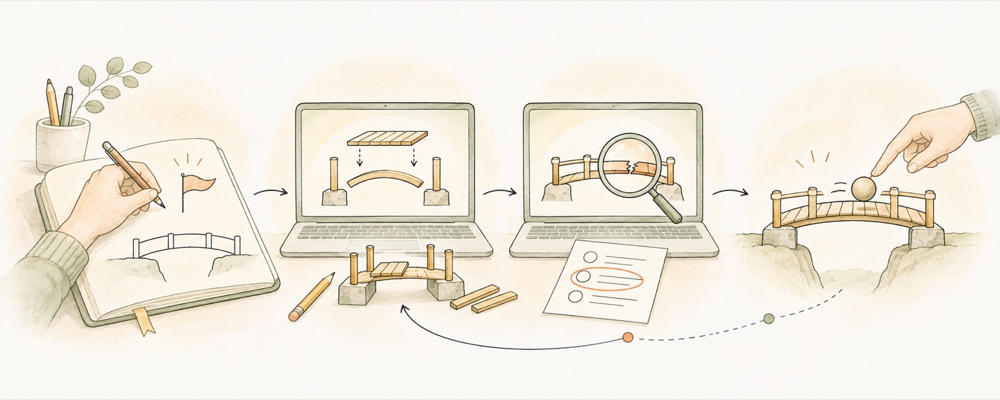

我怎么让 agents 真正完成任务

我想让一批 agents 做工人，另一批做监工。前者持续找资料、制作和修改，后者拿同一套目标去检查实际成品。我期待的交付，是一个能用、能检查的结果；思路讲清楚之后，剩下的工作也要接着做。
所以开始时，我会尽量说清问题、目标、约束和验收标准。需要什么交付物，哪些事实可以使用，什么状态才算完成，都影响后面的选择。如果目标还不够清楚，可以先讨论，但讨论也要逐渐落实到具体的工作对象。
让审查者看到实际结果
我喜欢把执行与审查交给不同的 agents。执行者找资料、制作、修改；审查者依据同一套目标，检查实际成品和原始材料。这样，审查才有机会发现执行者没有意识到的问题。
做个人网站时，页面能打开还不够。访客能不能找到内容，文字是否符合本人的经历，手机上是否好读，都要看具体页面。审查意见也需要具体，指出问题在哪里、影响什么，执行者才有办法继续改。
Boris Cherny 关于给 agent 提供验证反馈的讨论，与我关心的这一点相通。持续做事需要知道当前结果怎样，才能决定接下来修正什么。原文
长任务还需要让接手者找到目标、决定的理由和未解决的问题。Anthropic 关于上下文管理的文章提供了结构化笔记等方法。原文
Addy Osmani 写到，持续执行需要明确的停止条件，执行者也不该包办对成品的判断。这与我的要求相通。即使检查通过，我仍然要看那个具体结果。原文
我也愿意让另一个模型寻找反例和遗漏。但多一份审查，仍然需要接触事实依据。只读执行者的总结，容易把同样的遗漏带过去。分歧出现时，要继续检查来源、数据或运行结果，看看哪一种说法更符合实际。